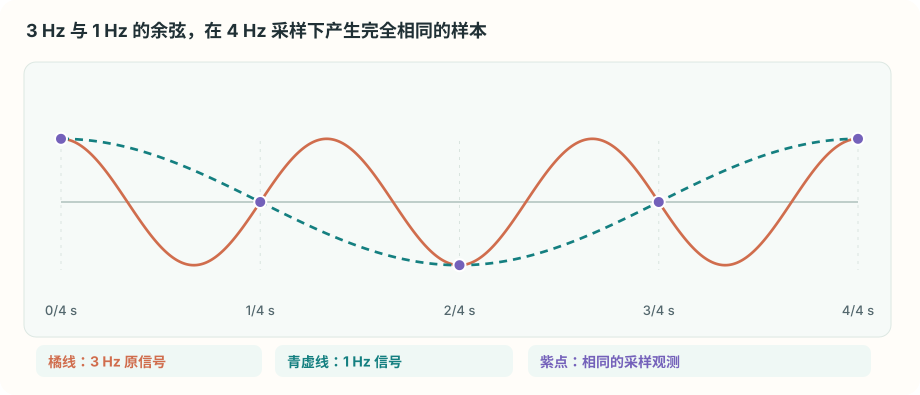
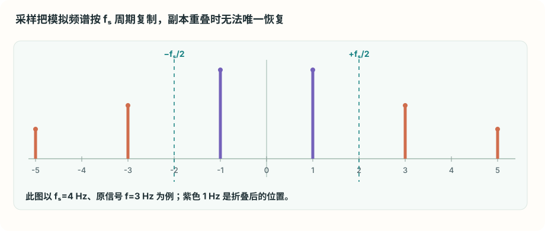

Signal · System · Insight / 04
采样定理：为什么高频会伪装成低频？
频率不是“记录得越多越好”那么简单；混叠可以从时域和频域两条路径严格说明。
3 Hz 的信号为什么会被当作 1 Hz？
假设一段连续的 3 Hz 余弦波，每秒只测量 4 次。任何一个样本都恰好与 1 Hz 余弦在同一时刻的测量结果相同。即使数值没有任何量化误差，我们也不能仅从这组样本唯一判断原波形是 3 Hz 还是 1 Hz。
这称为混叠：两个在连续时间不同的频率，经过采样以后产生相同或不可区分的数字频率。它不是 FFT 的误差，也不是只要增加算法复杂度就能恢复的问题；信息在采样之前没有受到适当限制，已经发生了多对一映射。
理想采样如何定义，采样定理需要什么？
定义连续时间信号 x_c(t)、采样率 fₛ（Hz），以及整数索引 n。等间隔理想采样只读取 t=n/fₛ 处的数值：
式（1）：n 为整数，采样率使用 Hz，时刻 n/fₛ 使用秒。
对于频谱严格落在 |f|<B 内的理想连续时间信号，当 fₛ>2B 时，频谱副本不会重叠，理论上存在理想重建方法。这里的前提比“fₛ 是最高频率两倍”更完整：信号确实限带，测量是准确的等间隔采样，而重建可以使用理想化的无限长插值过程。
让两条不同的曲线经过同一组采样点

3 Hz 余弦的样本为 cos(2π·3n/4)，1 Hz 余弦的样本为 cos(2π·n/4)。两相位相差 2πn/2 吗？更精确地说，前者相位与 −2πn/4 相差整数个 2π；而余弦是偶函数，因此每个整数 n 的取值完全一致。
通过选取适当的整数 k，把频率平移一个整数倍采样率，再取绝对值，可得到位于奈奎斯特区间内的一个等效正频率：
式（2）：选择适当的整数 k；频率的折叠可能伴随相位或正弦符号变化。
本例取 k=1，得到 |3−4|=1 Hz。若改用 8 Hz 采样，3 Hz 位于 4 Hz 奈奎斯特频率以内，不再折叠到 1 Hz。这里刻意用余弦展示“样本完全相同”，因为对某些正弦相位选择，折叠后的波还会有符号或相位差。
频谱为何会按照采样率周期复制？

理想冲激采样相当于把原连续波形乘以一个周期为 Tₛ 的冲激列。时域相乘对应频域卷积，而冲激列的频谱仍然是按 fₛ 排列的冲激列，因此原始连续频谱被复制到 …,−fₛ,0,+fₛ,… 等位置。
如果复制后的不同频带互相覆盖，就发生不可逆的混叠。数模重建时使用理想低通可以从互不重叠的频谱副本中选回原始一份；若采样前已经重叠，再理想的低通也不能区分它们的来源。
抗混叠与量化是两个独立的工程约束
正确的链路是“模拟抗混叠低通 → ADC 采样与量化 → 数字处理”。先做数字低通无法完全代替采样前的模拟滤波，因为两条原来不同的模拟频率已经变成相同的离散频率。过采样可以给模拟滤波器提供更宽的过渡区，但会增加前端速率与计算或数据带宽的成本。
位深 B 限制幅值精度。常见的量化信噪比近似式来自均匀量化、满幅正弦输入、无过载、量化误差按通常噪声模型处理等假设，并非任意输入的硬件性能保证：
式（3）：B 为量化位数；8 bit 代入约为 49.9 dB，仅为理想模型值。
实际设备还需要考虑模拟噪声、抖动、非线性失真、削顶与噪声整形等限制。不要把“理想 SQNR 估计”直接写成某型号 ADC 的实际 SNR。
改变采样率，观察 3 Hz 的折叠
动手验证：改变采样率 fₛ（Hz）
初始数值与所有必要说明均在本文给出；交互用于反复检查相同的计算。
交互图采用 3 Hz 正弦，显示其最低等效正频率；由于正弦存在相位和符号问题，逐点相等的数值证明使用余弦。下面的脚本同时验证 3 Hz 与 1 Hz 的余弦在 4 Hz 下相等，以及采样率提高到 8 Hz 后频率不再被折叠。
from math import cos,pi
def sampled(f,fs,count=8):
return [cos(2*pi*f*n/fs) for n in range(count)]
a,b=sampled(3,4),sampled(1,4)
assert all(abs(x-y)<1e-12 for x,y in zip(a,b))完整可执行示例（04_sampling_alias.py）；运行 python examples/04_sampling_alias.py。
判断一个采样系统时，哪些问题不能省？
- 输入真实的最高有用频率与最大带外干扰是多少？信号是否严格限带？
- 模拟抗混叠滤波器能否在保护带完成足够的衰减？
- 频率轴的单位是 Hz 还是 rad/sample？是否把采样率作为已知条件？
- 误差来自混叠、量化、时钟，还是数字计算本身？这些来源不能混为一谈。
练习：在 10 Hz 采样下分别求 13 Hz 和 17 Hz 余弦的最低等效正频率。解释为何“已知采样率”仍不能单独确定原信号频率，以及为什么需要先验带限。
核验来源
本文的等式是经典双边变换、理想采样与有限计算模型；没有把玩具实验的数字冒充成设备测试结论。查阅原始教材有助于完整理解它们各自的使用条件。
- MIT OCW · Digital Signal Processing study materials：采样、Z 变换与离散系统的标准推导。
- MIT OCW · Signal Processing: Continuous and Discrete：理想采样与频谱副本的数学条件。
- Oppenheim & Schafer · Discrete-Time Signal Processing：Z 域收敛域和 LTI 稳定性。
- Analog Devices · The z-Transform, Chapter 33：滤波器系统函数的工程理解。